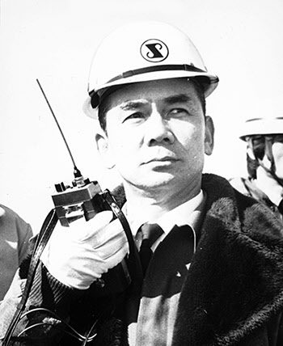
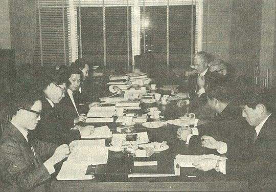
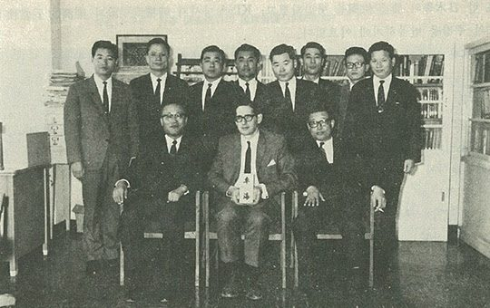

보도일 2014-11-03출처 조선일보 프리미엄조선 연재
KISA가 다시 약속한 ‘기본협정 체결과 착공의 7월’을 맞았다. 그러나 7월이 다 지나도 한국정부와 KISA는 기본협정조차 체결하지 못했다. 초조한 쪽은 한국정부, 특히 대통령 박정희였다. KISA와 기본협정을 체결하기 위한 실무단을 미국으로 급파할 수밖에 없었다.
1967년 8월 초에 급조된 경제기획원 경제협력국장 황병태를 단장으로 한 ‘철강사절단’에는 이듬해 4월 포스코 창립요원(부사장)으로 잠시 몸담게 되는 윤동석 서울대학교 공대 교수도 포함되었다. 사절단이 20일 일정의 피츠버그시 KISA 방문을 앞두고 청와대로 들어섰다. 그 자리에서 박정희가 최초로 승부의 카드를 공개했다. 참석자들에겐 불쑥 내민 것으로 보였겠지만, 통치자가 오래 품어온 비장의 카드였다.
“대한중석은 2년 반 동안 박태준 사장이 경영을 잘한 결과 재무상태가 매우 건실해졌고, 더구나 박 사장은 제철소 프로젝트에 필요한 리더십과 뛰어난 경영능력을 갖고 있습니다.”
드디어 대통령이 관료들에게 종합제철을 대한중석 사장에게 맡길 것이라고 밝힌 그때, 박태준은 해외출장 중이었다. 아시아, 미주, 유럽 순방. 이듬해의 중석판매 협상을 위한 긴 여정이었다.
철강사절단은 작은 성과를 올렸다. 주요 내용은 ‘연산 50만 톤을 60만 톤으로 늘리고 소요 외자(차관)를 1억2500만 달러에서 9000만 달러로 인하하여 기본계약을 체결하기로 한 것’이었다. 그들이 귀국하여 대통령에게 보고를 마친 즈음, 1967년 9월 8일, 박태준은 런던 메탈마켓센터에서 협상을 진행하고 있다가 한 통의 전문을 받는다. 장기영 부총리의 지시를 받아 고준식 대한중석 전무가 띄운 것이었다.
<대한중석이 종합제철소 건설사업의 책임자로 선정되었음. 박태준 사장은 종합제철소건설추진위원회 위원장으로 내정되었음. 즉시 귀국 바람.>

3대 조건도 담고 있었다.
1. 대한중석은 외국차관 협상과 교섭문제를 관장한다.
2. 대한중석의 정부 보유 주식에 대한 배당은 제철소건설 프로젝트로 전용키로 한다.
3. 대한중석이 종합제철소 건설자금의 내자 충당분을 조달하지 못할 경우에는 나머지를 정부의 재정자금에서 충당키로 한다.
이미 알고 있었던 것, 기어코 올 것이 왔다고 받아들인 박태준은 문득 자신의 나이를 생각했다. 마흔 살, 공자 말씀의 불혹(不惑)이었다. 흔들림 없이 무슨 일에든 도전할 나이에 이르렀다는 생각이 들었다. 그것이 여유와 심사숙고로 이어졌다. 더구나 종합제철이 하루아침에 될 것도 아니고 진작부터 대통령에게 받아뒀던 특명이니 한국산 텅스텐 수요자들과 만날 나머지 일정들도 다 소화하는 것이 국익에 도움이 되는 행동이라고 판단했다. 그의 회신은 간단했다.
<정부가 제시한 3대 조건대로 한다면 그 일을 맡겠음. 그러나 즉시 귀국하기는 불가능함.>
종합제철소건설추진위원장 내정자가 유럽을 돌아다니는 동안, 9월 11일, 대통령은 월간경제동향회의를 마친 후에 이어진 정부여당 연석회의를 통해 ‘대한중석을 종합제철공장의 실수요자로 결정했음’을 공표했다. 이제 박태준이 박정희의 공개적 특명을 받아 종합제철 건설의 지휘봉을 잡는 것은 단순히 시간의 문제로 남아 있었다.

미국 피츠버그로 날아갔던 황병태 일행이 거둔 성과에 힘입어 9월 25일 코퍼스사 부사장 샌드빅을 비롯한 KISA 대표 3명이 기본계약서 수정안을 들고 서울로 들어왔다. 다소 진전된 안이었다.
‘총 1억3070만 달러를 들여 연산 60만 톤 규모의 1단계 제철소를 1972년 9월에 완성하고, 국제 차관으로 9570만 달러, 한국 정부가 내자 3500만 달러를 조달한다.’ 그러니까 ‘가협정’ 때보다 생산규모를 20% 늘리고 건설비용을 20%쯤 줄인 것이었다. 그들보다 앞서 IBRD가 의견서를 보내왔다. 차관의 열쇠를 쥔 IBRD는 4가지 주의사항을 환기시켰다.
1. 제한된 계약으로 할 것(즉, 공장을 두 단계로 건설할 것).
2. 국제적인 컨설턴트를 고용할 것.
3. 차관단이 건설한 터키, 브라질의 제철소를 견학할 것.
4. 초기의 원활한 운영을 위해 외부기관과 관리용역 계약을 할 것.
한국정부가 도저히 무시할 수 없는 IBRD의 충고는 한마디로 ‘너희는 종합제철 외자도입을 할 수 없고 종합제철에 대한 경험도 능력도 없으니 전문기관에 용역을 맡겨야 하고 먼저 시작한 개도국 종합제철을 찾아가 착실히 견학부터 해두라’는 지시였다. 한국 상공부의 기술자들과 철강사절단이 순순히 거리상 훨씬 더 가까운 터키 에르데미르제철소를 견학했다.
9월 28일 경제기획원에서 경제관료 6명과 KISA 대표 3명 그리고 대한중석 대표 3명이 기본협정 체결을 위한 예비회담을 가졌다. 10월 3일 개천절, 단군이 처음 이 땅에 하늘을 열었다는 그 뜻 깊은 날, 종합제철 후보지로 결정된 포항에서 ‘종합제철공장 기공식’을 열기로 공표돼 있었다. 어떡하든 늦어도 10월 2일에는 한국정부 대표와 KISA 대표가 나란히 앉아 기본계약서에 서명을 해야 모양이 날 것이었다.
그러나 몇 가지 중요한 문제점들에 대해 양측 견해가 어긋났다. 특히 실수요자로 선정된 대한중석 대표들이 눈에 불을 켰다. 박태준의 ‘완벽주의’ 원칙과 성품을 익히 아는 그들로서는 야무지게 살피고 따져야 했다. 예비회담은 10월 12일에 다시 만난다는 회의록을 남기고 끝났다. 그 잉크가 채 마르기도 전에 이미 공표한 대로 포항에서는 기공식을 열어야 했다. 딱히 무리는 아니었다. 어쨌든 불원간 KISA와 기본협정을 정식으로 체결할 것이니까.

박태준은 유럽 출장 중에 대한중석을 통해 IBRD가 내건 4가지 조건도 보고받았다. 그는 ‘한국을 모욕하는 4가지 조건’이라고 생각했다. 4번 항은 특히 목에 가시처럼 걸렸다. 초기에 공장을 직접 돌리지도 말고 회사를 직접 경영하지도 말고 외국 용역기관에 의뢰하라는 것은 국가적 차원으로 말하면 신탁통치와 같은 것이 아닌가? 기술식민지, 경영식민지의 종합제철회사로 출발하라는 주장 아닌가? 9월 30일 귀국 비행기에 오른 그는 속이 부글부글 끓고 있었다.
‘KISA 놈들의 농간도 개입된 거지. 애초에 자기들은 IBRD 같은 국제금융기관과 직접 교섭하지 않는다고 했는데, 그게 차관 도입에 대한 책임 회피의 수단이고, 우리가 대들어서 옳게 하자, 정직하게 하자, 이렇게 맞서면 오히려 자기편들에게 프로젝트를 무산시켜 버리자고 로비할 수도 있는 놈들인 거지.’
박태준은 잠이 오지 않았다. 종합제철이란 대업의 의미와 KISA의 태도가 서로 등을 돌리고 앉은 남녀처럼 보였다. 어금니를 물고 김포공항에 내린 그가 청와대로 들어갔다. 박정희는 따뜻하게 맞았다. 대한중석 합리화 공로에 대한 덕담도 아끼지 않았다. 그러나 종합제철 사명에 대해서는 단호했다. 마치 5·16 직후에 비서실장을 맡으라고 했을 때처럼, 아니, 그때보다 더 셌다.
“우리가 오래 기다리고 준비했는데, 이제 때가 왔어. 나는 임자를 잘 알아. 이건 아무나 할 수 있는 일이 아니야. 어떤 고통을 당해도 국가와 민족을 위해 자기 한몸 희생할 수 있는 인물만이 할 수 있어. 아무 소리 말고 맡아! 임자 뒤에는 내가 있어! 소신껏 밀어붙여 봐!”
박태준은 가슴이 짜안했다. 순간적으로 내면의 저 밑바닥에서 불덩이 같은 무엇이 울컥 솟아올랐다.